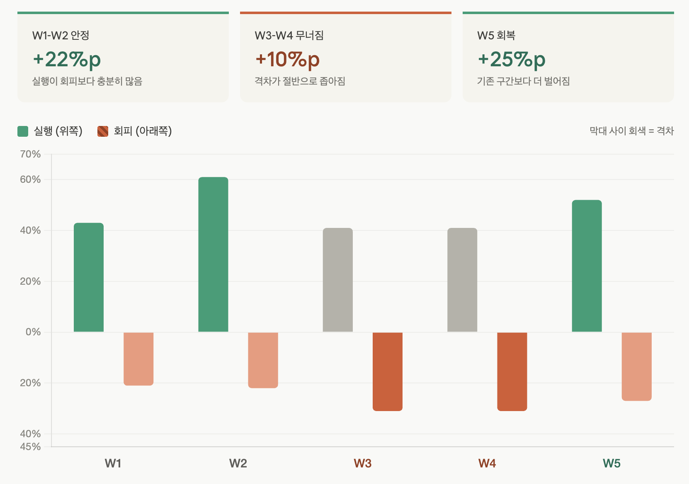

금동이봇
5주 사용 후기
5주의 측정 기간 동안 매일 사용하면서 데이터를 모았어요. 네 가지 영역(판단 정확도 / 행동 변화 / 인지부하 / 회고 의미성)을 평가한 결과를 정리합니다. 영역마다 처음 가설이 맞았던 부분과 빗나갔던 부분이 따로 있었어요.
5주의 측정 기간
5주 동안 매일 사용하면서 데이터를 모았어요. 구조화 메시지 306건, 저녁 회고 39건, 주간 회고 1건. 작은 표본이지만 한 명의 사용자(저)가 매일 진심으로 던진 데이터라 행동 변화를 측정하기에는 충분했어요.
기능보다 측정 기준이 먼저였어요
처음에 가장 헷갈렸던 건 '에이전트 UX의 성공'을 어떻게 측정하느냐였어요. 클릭률이나 DAU 같은 익숙한 지표로는 잘 안 잡히더라구요. 결국 시스템 개입이 실제로 행동을 바꿨는가가 더 중요한 질문이었거든요.
그래서 기능을 추가하기 전에 평가 프레임부터 만들어두기로 했어요. 정량 지표만으로도, 정성 체감만으로도 부족했고, 둘 다 보면서 판정하고 개선까지 이어지는 흐름이 필요했습니다.
먼저, 용어 몇 가지
이후 본문에서 자주 등장하는 용어들이라 짧게 정리해뒀어요.
| 용어 | 의미 |
|---|---|
| Drift | 사용자가 목표와 어긋나게 흘러가는 상태. 시스템이 '지금 흔들리고 있어'라고 판단하는 기준. |
| Execution (실행) | 사용자의 메시지가 실제 행동/진전을 담고 있는지. 회피/인풋과 대비되는 분류. |
| L0~L4 | 시스템 개입 강도. L0=침묵, L1=반영, L2=질문, L3=제안, L4=능동적 말 걸기(아침·저녁·주간) |
| 저녁 회고 3단계 대화 | 좋았던 것에서 아쉬운 것, 내일 해볼 것으로 한 번에 묻지 않고 순차로 주고받는 구조 |
| 주간 회고 AAR 4단계 | After Action Review 기반. 지난주 시도, 결과, 차이, 다음주 실험으로 실험 루프를 돌리는 구조 |
네 가지 영역으로 나눠 본 이유
측정 영역을 네 개로 나눈 건, 어느 하나만 봐도 위험하다고 느꼈기 때문이에요. 판단이 정확해도 행동이 안 바뀌면 의미가 없고, 행동이 바뀌어도 부담이 크면 지속이 안 되거든요. 회고 자체가 의미 없으면 그냥 일기장이 되어버리고요.
| 영역 | 무엇을 보는가 | 왜 중요한가 |
|---|---|---|
| A. 판단 정확도 (Drift) | 시스템의 '지금 흔들리고 있어' 판단이 실제 체감과 일치하는가 | 결과가 의심되면 어떤 개입도 의미 없다 |
| B. 행동 변화 (Execution) | 에이전트 쓰기 전/후로 실제 행동이 바뀌었는가 | 기록 툴이 아니라 자기조절 시스템이 되려면 필수 |
| C. 인지부하 감소 | 기록과 실행 관리가 머릿속 짐이 되지 않는가 | 부담이 있으면 지속 불가능 |
| D. 회고 의미성 | 회고가 요약을 넘어 전략 판단에 도움을 줬는가 | 패턴이 안 보이면 일기장 기록만으로 충분하다 |
5주 후의 결과
5주가 지나고 보니, 사전에 정의해둔 'Case 3: 모든 영역 안정 + 체감 강함' 기준에는 도달했어요. 다만 영역마다 처음 가설이 맞았던 부분과 빗나갔던 부분이 따로 있었습니다.
| 영역 | 판정 | 핵심 발견 |
|---|---|---|
| A. 판단 정확도 | ✅ 충족 | 4일 기준 + 판단 근거 병기 전환이 결정적 |
| B. 행동 변화 | ✅ 충족 | 2달 공백이었던 회고가 5주간 306건 지속 |
| C. 인지부하 감소 | ✅ 충족 | 남은 저항은 인지부하가 아니라 감정부하. 자책 대신 수용으로 전환 중 |
| D. 회고 의미성 | ✅ 충족 | 데이터 나열에서 편지 형식으로의 전환이 결정적 |
영역별 발견과 개선
A. 판단 정확도: '너 지금 흔들리고 있어'가 맞았나
처음엔 시스템이 "흔들리고 있어"라고 말해줘도 그게 정말 맞는 판단인지 잘 몰랐어요. 데이터 7일치를 평균 내서 보여주니까 너무 흐리멍덩한 판정이 나왔거든요.
두 가지를 바꿨습니다. 하나는 데이터 범위를 7일에서 4일로 줄인 것. 다른 하나는 '방향 점수 93점' 같은 숫자만 던지던 출력을 "좋은 흐름이야 (실행 10건 / 회피 0건 / 총 14건)" 식으로 판정과 근거를 함께 제시하는 형식으로 바꾼 것.
초반에는 근거를 모르겠어서 흔들리고 있다는 판단을 잘 몰랐는데, 아침마다 최근 4일을 기준으로 판단하다보니 정확도가 올라간 느낌이었어. 근거도 말해주고.
근거를 함께 보여주는 게 블랙박스에 대한 공포를 풀어줬어요. 디자이너가 해야 할 일은 AI의 판단을 감추는 게 아니라, 어떻게 보여줄지 설계하는 거였어요. 정량적으로는 부정 감정 비율 14%, 회피 비율은 21→22→31→31→27%로 4월 초 한 번 상승한 뒤 회복하는 흐름이 잡혔습니다.
B. 행동 변화: 진짜로 다르게 움직였나
실행 비율은 43%로 시작해 61, 41, 41, 52%로 V자 회복했어요. 5주간 306건이 끊기지 않고 이어졌습니다. 두 달 비어있던 회고가 매일 이어지는 게, 데이터 위에서 직접 보이는 변화였어요.
회고를 까먹는 일이 많았어. 바빴던 시기는 2달도 통째로 비어있었어.
일정에 대한 알림도, 상태에 대한 알림도 줘서 그런지 내가 할 일, 내 방향을 계속 인지하게 됐어.
습관화 됐을 때에는 불안하거나 회피하고 싶을 때에도 솔직한 감정 메시지를 남기고, 현재 상태를 자책만 하지 않고 수용할 수 있게 점점 변한 거 같아.
만들면서 발견한 패턴은, 회피할 때는 기록이 줄어든다는 거였어요. 실행할 때만 성실히 기록하더라구요. 그래서 처음엔 회피하는 순간 실시간 넛지를 보내봤는데, 부담스러운 감정에 반작용으로 오히려 사용을 멈추게 됐어요. 결국 그 기능은 제거하고, 일정 횟수 이상 미루다 실행한 경우에만 간단한 질문(L2 Coach)으로 전환 유발 행동을 수집하도록 바꿨습니다.
이 영역에서 가장 인상적이었던 건 능동형 L4(아침·저녁·주간 자동 말 걸기)가 가져온 효과예요. 시스템이 부르지 않아도 먼저 말을 거는 게, 도구가 환경으로 넘어가는 결정적 순간이었어요. 방향 인지를 매일 유지시켰고, 그 결과 '감정 수용'이라는 2차 효과까지 만들었거든요.

C. 인지부하 감소: 진짜 요인은 따로 있었어요
이 영역에서 가장 놀란 건, 처음에 세웠던 가설이 진짜 원인이 아니었다는 점이에요.
처음엔 태그리스 입력(자연어로 그냥 말하기)이 인지부하를 줄였다고 생각했어요. 인지부하의 진짜 감소 요인은, 기록 방식이 쉬워진 게 아니라 무엇을 기억하고 판단해야 하는지를 시스템이 가져간 데 있었어요.
| 기능 | 외주화한 인지부하 |
|---|---|
| 저녁 회고 편지 (22:30 자동 발송) | "오늘 돌아봐야 하는데"라는 기억 부담 |
| 일정 10분 전 알림 | "10시 미팅 있지"를 붙잡고 있는 부담 |
| 아침 브리핑 | "오늘 뭐부터 해야 하지"의 판단 부담 |
| 주간 편지 | "이번 주 어땠더라"의 정리 부담 |
기록의 부담을 줄인 게 아니라, '뭘 해야 할지 기억하고 판단하는 부담'을 시스템이 가져간 게 핵심이었어요.
정량적으로는 주간 메시지 수가 67→76→51→64→48건으로 감소 추세는 아니었고, 저녁 회고 응답률은 79%였어요. 다만 기록이 어려워지는 진짜 이유는 인지부하가 아니라 다른 곳에 있었는데, 그 발견은 다음 섹션에 따로 정리했습니다.
D. 회고 의미성: 요약을 넘어 판단에 도달했나
저녁 회고 39건 중 31건이 응답으로 이어졌어요(79%). 핵심은 응답률 자체보다, 그 응답의 질이 어떻게 바뀌었는지였습니다.
처음에 어떻게 이렇게 마음을 읽을 수 있지? 싶은 순간이 있었어.
처음에는 데이터 위주로 말하다가, 데이터를 바탕으로 편지 형식, 금동이 말투로 주기 시작했을 때 정말 깊게 공감하고 다음 시도를 고민하고 오늘 하루를 감사히 마무리할 수 있었어.
세 가지를 바꿨어요.
- 저녁 회고. 3개 질문을 한 번에 보내던 방식에서 3단계 순차 대화로 바꿨어요. 한 번에 다 묻으면 답변이 형식적이 됐는데, "좋았던 것"을 묻고 답을 받고, "아쉬운 것"을 묻고 답을 받고, "내일 해볼 것"을 묻고 답을 받는 식으로 나누니 답변이 깊어졌습니다.
- 주간 회고. 관찰 중심에서 실험 루프(AAR 4단계)로. 지난주 시도 → 실제 결과 → 차이 원인 → 다음주 실험. 관찰에 그치지 않고 다음 행동으로 연결되도록 만들었어요.
- 주간 메시지. 데이터 리포트에서 감정 편지로. 같은 데이터도 전달 형식이 체감을 결정한다는 걸 가장 분명하게 본 부분이었어요.
같은 분석 결과라도 전달 방법에 따라 사용자가 행동 전환까지 이뤄낼지, 그저 요약에 그칠지 달라져요. 디자이너의 일이 정확히 여기에 있다는 걸 5주 동안 매일 확인했습니다.
예상 밖의 가장 큰 변화: 감정부하 감소
기록 방식이 쉬워진 것보다 내가 뭘 확인해야하는지 덜 기억해도 돼서 좋았어. 다만 기분이 저조해서 행동이 잘 나가지 않을 때는 메시지 보내는 게 어려웠어. 나 자신의 잘못을 인정해야하니까.
네 가지 영역을 측정하면서 가장 크게 변한 건, 사실 처음 가설에 없던 부분이었어요. 일상에서 어떤 일을 하고 있는지, 어떤 감정인지를 자연어 그대로 기입하다 보면 금동이봇이 그 기록을 바탕으로 제 패턴을 만들고 해석해줍니다. 그러다 보니 실행과 관계없이 회피하고 있는 순간도, 그게 어떤 감정 때문인지가 함께 보여요.
자책으로만 넘어가던 회피 순간이 "아, 지금 이런 감정이라 이렇게 흐르고 있구나"로 바뀌면서, 그 자체를 수용하게 됐습니다. 행동을 바꾸려고 애쓰는 게 아니라, 지금 상태를 인정하고 다시 흐름을 잡아갈 수 있게 된 거죠.
결과적으로 하루를 살아가는 데 부담이 낮아졌고, 감정부하도 함께 줄었어요. 처음에는 회고 도구를 만든다고 생각했는데, 실제로 만든 건 감정을 수용하게 해주는 거울에 가까웠습니다. 정량 지표로는 잘 안 잡히는 영역인데, 5주 후 가장 분명하게 느낀 변화이기도 합니다.